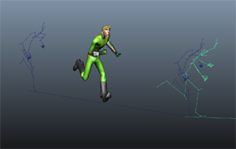

在使用“Trax 编辑器”(Trax Editor)操纵动画序列中的片段时，您可以使用片段匹配选项基于某个指定对象自动对齐片段，或显示交互片段重影，以便手动在场景中对齐片段。

在片段之间匹配姿势
- 确保将您的角色设置为当前角色集（设置当前角色集(Set the current character set)）。
- （可选）为要匹配的片段显示和编辑片段重影。
- 拖动动画，找到在每个片段中角色都到达相同姿势的帧，然后修剪或分割片段，使相同姿势出现在第一个片段的末尾，下一个片段的开头。
例如，如果要对行走片段和跑步片段进行融合，应修剪行走片段，使其结束于左脚放下的帧，然后修剪跑步片段使其开始于相似姿势。
- 执行下列任一操作，以在 3D 空间中对齐片段：
手动对齐片段：
- 选择片段重影，然后移动并旋转，直到它与下一个片段的轨迹对齐。
自动对齐片段：
- 选择一个对象用作匹配轴或定位点。
这就是 Maya 用来在空间中确定位置和匹配片段的对象，它可以是角色集中包含的任何对象，或受角色集中所含对象驱动的任何对象。
具体选择哪个对象取决于两个片段之间的过渡类型。例如，对于行走和跑步片段，由于动作主要集中在脚上，因此最好选择左踝或右踝效应器作为匹配对象。
- 选择要匹配的片段，然后选择“修改 > 匹配片段”(Modify > Match Clips) >
 。
。
- 在匹配片段选项(Match clips options)中，设定所需的选项。
选择的匹配对象将显示在“匹配节点”(Match Node)字段中。（若要更改用于任何后续匹配操作的匹配对象，可以选择新的对象，然后单击 。）
- 单击“匹配片段”(Match Clips)。
Maya 将检查位于第一个片段末尾，第二个片段开始处的“匹配节点”(Match Node)对象的位置，然后移动第二个片段以基于该对象匹配第一个片段。
提示： 对于基于相同匹配对象的后续匹配操作，可以选择“修改 > 匹配片段”(Modify > Match Clips)来对齐片段，而不更改选项。